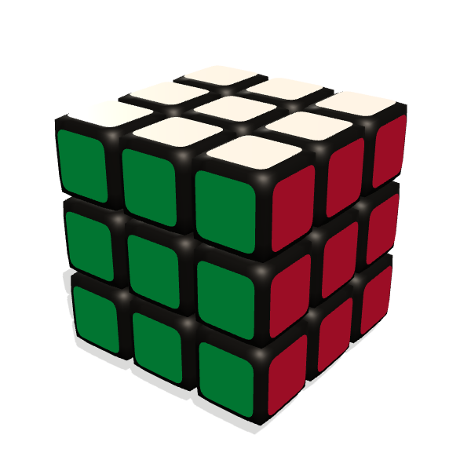

I turn messy data into answers people can trust.
That's the day job.
Lately
Counted the college degree programs that quietly stopped conferring: 28.3% of
them, in years when the totals went up.
The Degrees That Went Quiet
Also rebuilt this site with motion and a dark mode.
There is more: a few photos from ordinary days, and a Siberian husky
named Whiskey. See the Now page
About
I like problems that look messy until they suddenly are not. I grew up in
India, live in Dallas now, spend my days as an analytics engineer at
Ticketmaster making data make sense, and my evenings building things like this
site.
Ticketmaster runs on a flood of fan activity every day, and raw data at that
scale is not something you can simply ask questions of. It has to be shaped
first. I built the platform that does the shaping, end to end, and the teams
that fight abuse, the data scientists, and the product teams now rely on it. I
got there by being the analyst first: the person who has to trust a number
before presenting it.
Everyone keeps saying AI is coming for jobs like mine. So I went and learned
to build with it. A lot of my work now runs through an AI coding tool called
Claude Code, including this site. I build my own agent systems too, which is
where most of what I actually know about AI came from.
Outside work
Somewhere in 8th grade I decided the Rubik's cube was a personal insult. Got
the 3x3 down to about 30 seconds, then did the 4x4 and 5x5 too. None of this has ever been useful, which I notice hasn't stopped me from putting it on a website.
So I built it a stopwatch. Superflip is the same cube driven from the keyboard: real scrambles, a timer that starts on your first turn, and every solve kept. The one below does not keep time.

Shift reverses a turn. Click a key, press a new
one to rebind.
Projects
The Degrees That Went Quiet, two analytics warehouses, machine learning
projects, Superflip, this website, and one idea
I have not built yet. See the projects
Experience
Analytics engineering and analysis at Ticketmaster, before that a nonprofit
and a university research lab. See the experience
Writing
Short pieces on why products win or lose, plus the occasional idea I picked up and could not leave alone.
Read the writing
Reply
You made it to the bottom, which is either interest or excellent
procrastination.
Liked something? Disagreed with something? Want to talk about something else
entirely? Same address either way. There is no calendar link, you will have to
type. sachindewangan2000@gmail.com